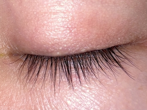

ⲃⲟⲩϩⲉ S, ⲃⲱϩⲉ SA, ⲃⲟⲩϩⲓ B nn m, eyelid: Job 16 16 SB, Ps 10 4 SB, Pro 4 25 SAB, Si 26 9 S βλέφαρον, Glos 24 S also ὑποβλέφ., C 86 44 B ϣⲁⲣⲉⲡⲓⲃ. ⲙⲧⲟⲛ ⲙⲙⲟϥ ⲉϫⲉⲛⲡⲓⲃⲁⲗ. ⲣ ⲃ., ⲟ ⲛⲃ. S, grow, develop (abnormally ?) eyelids: PMéd 219 ⲛⲃⲁⲗ…ⲛⲥⲉⲣ ⲃ., ib 299 ⲉⲣⲉⲛⲉϥⲃⲁⲗ ⲱ ⲛⲃ.; cf ib 226 ⲣⲱⲧ ⲃ.
(noun masculine)
anatomy
eyelid [βλεφαρον]

1: eyelid
complete
| ⲣ ⲃ., ⲟ ⲛⲃ. S | grow, develop (abnormally ?) eyelids242 | 48a | |||||||
48a
See also:
| view | plural: ⲕⲉⲗϥⲓ B | (noun) eyelid2848 |
| view | ⲥⲱⲡ, ⲥⲱⲡⲉ S | (noun masculine) eyelid1455 |
| view | plural: ⲛⲟϩ B | (noun) eyelid [βλεφαρον]1221 |
| view | ⲥⲙⲁⲩ SSfBF ⲥⲙⲁⲁⲩ S | (noun masculine) nn m dual
temples (tempora), eyelids [κροταφος, βλεφαρον]1431 |
| view | plural: ⲥⲣⲉⲃⲣⲟⲩⲃⲉ S | (noun) handfuls
But prob l جفن eyelid1463 |